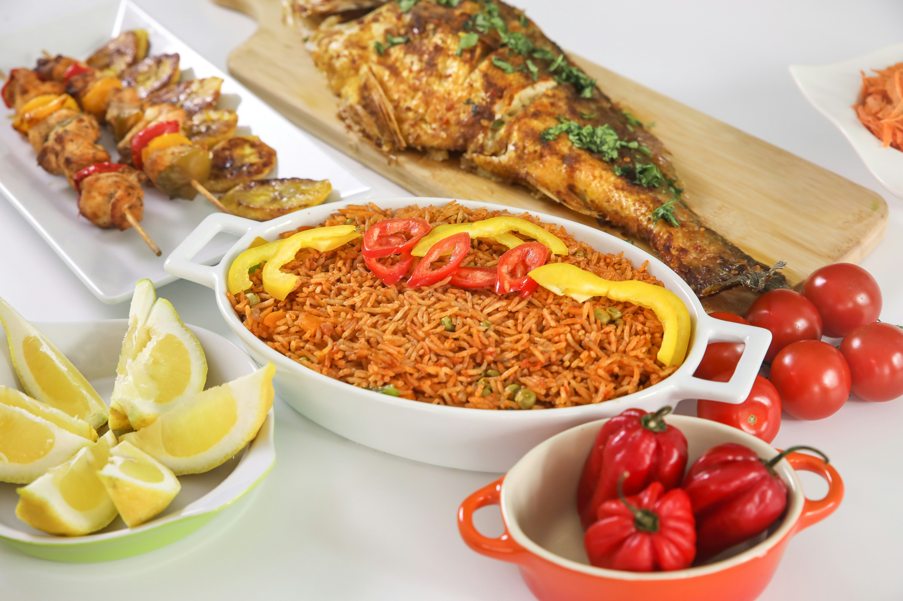

Grilled Fish with Jollof Rice

Ingredients
- Fish
- Rice
- Tomatoes
- Onion
- Garlic
- Vegetable oil
- Black pepper
- Curry powder
- Thyme
- Carrots or peas(optional)
- Seasoning cubes
- Lemon
Simple steps
- Season the fish with salt,pepper,garlic,thyme, and other prefered spices.
- Grill the fish untill it is golden brown and fully cooked.
- Prepare the sauce: fry onions, add tomato paste and blended tomatoes and pepper, then cook untill the sauce thickens.
- Add the rice and enough water or stock. Season and allow it to cook untill the rice is tender.
- Add vegetables such as carrots or peasif desired.
- Serve the jollof rice with the grilled fish and lemon slices.
Home